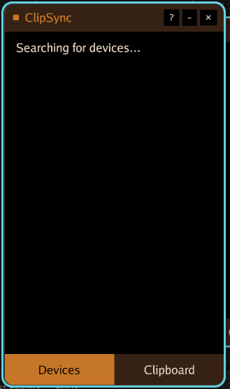
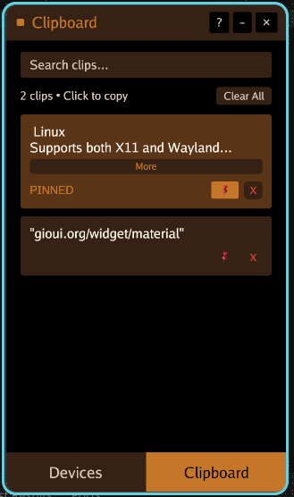
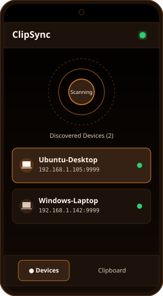
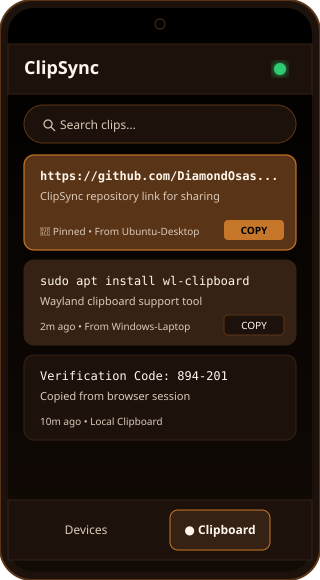

Connect to Same Wi-Fi
Connect both your computer (Windows, macOS, Linux) and your Android phone or laptop to the same Wi-Fi router or local subnet.
Launch ClipSync
Open ClipSync on all devices. Discovery begins immediately in the background using mDNS (Zeroconf) on port 5353 and 9999.
Instant Synchronization
Copy any text snippet or URL on device A. It immediately arrives on device B's clipboard history and notification feed in less than 10 milliseconds.
Desktop Pairing & Verification (Windows / macOS / Linux)
ClipSync runs as a lightweight native desktop client with an integrated system tray daemon. When you open the window, you have two primary views:

1. Discovered Peers View
Shows all actively discovered machines on your local network. A glowing green indicator confirms bidirectional heartbeats.
assets/screenshots/devices.png
2. Live Clipboard Cards & Pinning
Every copied snippet appears here in real-time. Pinned snippets are highlighted in warm bronze glow and persist across app restarts.
assets/screenshots/clipboard.png💡 Pro-Tips for Desktop:
- Closing the desktop window minimizes ClipSync to your System Tray / Menu Bar, keeping sync active in the background.
- Right-click the tray icon to quickly reopen the window or select Quit to exit.
- On Linux, ensure
wl-clipboard(for Wayland) orxclip(for X11) is installed so clipboard changes are monitored correctly.
Android Mobile Pairing & Usage
ClipSync Android provides an elegant mobile interface designed for touch operation. Because modern Android (Android 10+) restricts background clipboard modification for privacy, ClipSync provides a seamless Tap-to-Copy workflow:

1. Mobile Radar & Active Peers
When you open ClipSync on your phone, it browses _clipsync._tcp to automatically list your connected PC workstations.

2. Tap-to-Copy Cards
Clips copied on your computer arrive in your phone's history feed. Simply tap COPY on any card to paste it anywhere on mobile.
assets/screenshots/android-clipboard.png📱 Battery Optimization Setting on Android:
To keep ClipSync's incoming UDP listener alive when your phone screen is off, set ClipSync's battery usage to Unrestricted in Settings > Apps > ClipSync > Battery.
Website Screenshot Asset Reference
Here is the exact list of image files used across this documentation site. You can drop or replace these PNG files directly in docs/assets/screenshots/ and the website will render them immediately:
assets/screenshots/devices.png
Desktop UI
Description: Desktop application window showing the Devices tab with discovered local peers.
assets/screenshots/clipboard.png
Desktop UI
Description: Desktop application window showing the Clipboard tab with pinned and unpinned clip history cards.
assets/screenshots/android-devices.png
Android Mobile UI
Description: Android mobile screen showing discovered PC peers and animated radar scan.
assets/screenshots/android-clipboard.png
Android Mobile UI
Description: Android mobile screen showing incoming clip history cards with tap-to-copy buttons.
assets/screenshots/firewall-settings.png
Network / Firewall
Description: Terminal or firewall setting screenshot showing allowed UDP ports 9999 and 5353.